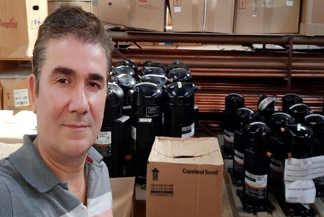

Ultimos Proyectos. Sitios de ventas y servicios


Hola te doy la bienvenida este pequeño espacio en la Web, el cual esta destinado a mostrar una breve descripción de mi
hoja de ruta y trayectoria profesional.
En esta sección de presentación, quiero compartir que mis inicios se desarrollaron en el sector turístico, en empresa
Nueva Chevallier, donde me desempeñé como asesor comercial, venta de pasajes, atención al cliente y coordinación de servicios en
oficina de tráfico y boleteria en terminal de ómnibus de Retiro.
Con el tiempo adquirí experiencia en el área administrativa y pasé a formar parte del departamento comercial,
departamento de marketing y oficina de pagos a proveedores.
Estas funciones han contribuido de manera significativa a mi desarrollo personal y profesional, permitiéndome
crecer en una institución de renombre que actualmente se destaca en el
sector turístico.
Al concluir mis servicios en el sector turistico, estoy decidido a dar forma a mis metas y
objetivos mediante una preparación centrada en el área técnica, combinada con el área comercial y atencion al cliente. Mi intención es
visibilizar y cuantificar productos y servicios a través de medios digitales, sitios WEB personalizados con fundamentos comerciales,
E-commerce y redes sociales, cuantificando mis KPI relevantes para mi micho de mercado.
Para lograr esto me capacito en los lenguajes elementales para desarrollo WEB frontend HTML, CSS y JavaScript
así como en materia de marketing digital y desarrollo de contenidos. Avarcando lo conocimientos comerciales
en plataformas e E-commers destacadas para su administracion.
Con mi formación técnica en climatización HVAC, refrigeracion y aire acondicionado con tecnología inverter,
así como en sistemas de alimentación trifásica y calderas murales de doble servicio, convencionales y de condensacion,
he abierto nuevas oportunidades laborales en el sector de climatización. Contribuyendo en mi formacion y personal.
A medida que he ampliado mis conocimientos, he definido mi público objetivo e identificado el nicho
de mercado en el que deseo incursionar. Esta claridad me permite ofrecer servicios adaptados a las necesidades
específicas de los clientes, asegurando así un impacto positivo en el area postventa y ventas de insumos y servicios.
Bajo la cultura de organizacion y de comunicación en conjunto con otros
sectores de la empresa, se logra de manera exitosa la formación de un
equipo de trabajo sólido resolutivo y eficaz con ideas creativas y
tomas de decisiones, asumiendo riesgos como parte del proceso de crecimiento.
Con la supervisión y el respaldo de líderes de cada
sector se estableció a los representantes como línea de conducta
tareas en función a las demandas establecidas por la empresa, estas normativas lograron fortalecer su reputación
e imagen,
mejorando en términos comerciales en un mercado de alto nivel de
competitividad posicionándose como una de las firmas mejor calificadas del mercado turistico.
Dentro de esta línea de conducta se logra lo que hoy se conoce como Nueva chevallier, una empresa con
trayectoria y prestigio donde tuve posibilidad de representarla en distintos sectores tales como:
Atencion al cliente en Terminal Retiro - Venta de pasajes - Coordinador de servicios en plataforma -
Comunicados a TEBA "Altas, Bajas y Suspenciones de servicios" - Liquidaciones y cierre de Cajas generales de
boleteria y encomiendas de Retiro - pagos de Viaticos a personal de conducción.
Traslados a Depto Comercial
como: Recaudador, interventor y coordinador de servicios a 12 Agencias del pais, entre ellas, San Pedro Rock y
Baradero Rock, partido de la costa, General pico, San Martín de los andes y Mar del plata - venta exclusiva al
EJERCITO ARGENTINO, pagos con ordenes Oficiales en regimiento de los Patricios en oficina de turismo.
Traslado A Depto Marketing como Administrador programa Tarjeta viajera, entrega de pasajes a pasajeros
frecuente, administrador de pautas y canjes publicitarios.
Administrativo y Pago a Provedores, control
Catering y gestion de calidad - Control de agencias.
Poder ser parte de una empresa tan significativa y tan prestigiosa dentro del rubro turístico en transporte de
pasajeros como Chevallier, asume múltiples compromisos, así como también un tacto distintivo y un conocimiento
que contribuye a un desarrollo y un crecimiento personal, con una mirada objetiva y resolutiva al momento de
enfrentar situaciones complejas y criticas.
Ya inmerso en materia de refrigeración donde el conocimiento y la capacitación permanente se vuelven
indispensables a la hora de brindar un correcto diagnóstico a distintos equipos, surge la posibilidad de
trabajar en INDUBEL SRL, una empresa con más de 30 años de trayectoria en refrigeración industrial, domiciliaria
y comercial, donde su principal objetivo es el asesoramiento técnico a sus clientes y con la supervisión de sus
ingenieros el cual garantiza un optimo rendimiento en equipos de refrigeración, brindando un asesoramiento
destacado a todos los profesionales, técnicos y Esta oportunidad de crecimiento personal dentro del rubro de
Refrigeración, amplio en gran manera mis expectativas de adquirir todos los conocimientos técnicos vinculados en
materia de refrigeración comercial, domiciliaria y comercial asumiendo tareas y asesoramientos tales como:
Atención al público en general y técnicos en mostrador, armado de pedidos a personal técnico especializado,
solicitudes y armados de reposición de equipos en mostrador, deposito y administración de Refrigerantes,
broncería, compresores y equipamiento de instalación, solicitudes de repuestos, herramientas de precisión y
accesorios de grandes cadenas de supermercados, Organización y logística de repuestos y equipos
tales como: DANFOSS, MASTERCOOL, UNIWELD, MOTECH, ELITECH, COOPELAND, EMERSON, SARSA entre otros.
Al enfrentar nuevos desafíos, se presenta la oportunidad de ampliar mis conocimientos técnicos en el campo de la calefacción, especialmente en calderas murales de doble servicio y sus instalaciones asociadas, tales como: radiadores, instalaciones sistema pex, colectores de mando y retorno, intercambiadores de calor, boiler, conexiones con bombas recirculadoras de agua, conexiones de termostatos (wifi, comun e inalambrico) conexiones de combistatos (T-1000) en sincronizacion con boiler y caldera, reemplazo y reparaciones de placas electronicas. Este nuevo concepto me ha permitido desarrollar una perspectiva y una visión analítica al ofrecer diagnósticos precisos y contundentes. Gracias a la participación de técnicos experimentados, he ampliado mis conocimientos en la provisión de soluciones rápidas y efectivas, comprendiendo en profundidad los detalles y el comportamiento de diversas calderas y sus complejas instalaciones. Para abordar las situaciones con mayor precisión y ofrecer un servicio de calidad distintiva en el ámbito de HVAC, busco adquirir conocimientos en las siguientes instituciones: Triangular, Club Peisa, Baxi, Udemy, entre otras.
Saber mas de insertMarketing Digital, desarrollo de contenido y estrategia digital, Tecnico en reparaciones de PC y Notebook, Instalaciones y correcciones electricas domiciliarias y comerciales, instalaciones y mantenimiento de camaras de vigilancia CCTV, tecnico en refrigeracion y aire acondicionados, reparaciones de placas electronicas de equipos de refrigeracion, mantenimiento y reparaciones de equipos trifasicos y monofasicos con tecnologia inverter, Refrigeracion del automotor.
Desarrollo web es el lugar donde puedo planificar y estructurar mis ideas de manera clara, basadas en mis experiencias y conocimientos técnicos en materia de refrigeración y equipos tecnológicos, focalizando a mis visitantes en considerar la compra de mis productos y servicios con soluciones reales manteniendo el vinculo brindando un acompañamiento en el bienestar de sus equipos. Para lograr un tráfico orgánico y segmentado de visitantes en mi sitio web, es necesario contar con ciertos conocimientos técnicos en materia de "Marketing Digital", donde los datos se vuelven indispensables a la hora de evaluar mis proyectos como Kpis y métricas de valor. Fundamentalmente contar con un sitio responsivo, esto es sumamente importante para poder posicionar en los resultados de búsqueda conocido como "SEO" maximizando la posibilidad comercial en mis publicaciones y a su vez fidelizando prospectos con posibilidad de comprar en corto mediano y largo plazo, basadas en publicaciones de gestión como Facebooks ads-manager - administrador de anuncios y metricas en google ADS .
Si bien el rubro de refrigeración es amplio y sumamente interesante, es de vital importancia estar capacitado
y mantenerse
al día con las actualizaciones vigentes con los avances tecnológicos que se aplica en cada área en la materia,
con el fin de
Diagnosticar con precisión y con la tranquilidad de asumir riesgos que pueden ser determinantes tanto para el
Usuario como para el técnico, Sobre todo si se trata con tecnología inverter donde se administra distintas
Potencias y por ende distinta manipulación.
Estos conocimientos aplicado con las siguientes practicas asume resultados tales como; confiabilidad,
durabilidad y prestancia en
reparaciones de equipos tipo Split, ventana, piso techo y de automotor. Control de consumo electrico,
Reparaciones y soldaduras, carga de distintos tipos de refrigerante "por peso y por consumo electrico segun
ficha tecnica del equipo", cambio de filtros desidratador, Control de presiones en lineas de alta y
baja, Limpieza y de unidad interior y exterior con equipo vaporizador, reparaciones de placa
electronica y
reemplazos de aislante termico y tacos antivibratorios.
Vinculado de manera directa con equipos monofasicos y trifasicos, electricidad se vuelve una materia indispensable a la hora de interpretar distintos equipos ya sea de refrigeracion como componentes electronicos, variaciones de tension en placas o la manipulacion de termomagneticas, la importancia de sus diyuntores y su puesta a tierra, reparaciones y el optimo desempeño de contactores, fichas, puntos y tomas tanto para lineas monofasica como trifasita. Ubicaciones de fugas y correcciones. Reemplazo de contactores y guarda motores. Correcciones de factor de potencia con capacitor. Reparaciones de ventiladores de techo y control de velocidad o triac.
Armados y conexiones de equipos, formateos e instalaciones de sistema operativo backup, recuperacion de datos (segun condiciones), actualizaciones de driver y eliminacion de virus y malware, Reparaciones de fuentes (en lo posible) Reparaciones de conector AC notebooks, reemplazo de pasta termica y limpieza del equipo, reparaciones de fuentes de poder o recambio si fuera necesario. Actualizaciones de harware y puesta apunto desde BIOS.
Instalaciones de camaras analogicas, digitales, mini domo, PT y PTZ configuraciones de DVR, NVR, Placas DVR para bahias en pc, medios guiados, Balun (pasivo, activo y poe) configuraciones en red topologia de nodos y medios guiados con terminacion RJ-45 para conexion ethernet o no guiados en Estrella. Configuracion de aplicaciones para la mejor configuracio (codec) de imagen, Reparaciones de camaras y sensores infrarojo.
Certificados homologados por la universidad de General Pacheco, Ciencias economicas e instituto Academico de profesionales.
Manteniendo la logistica de crecimiento y de actualizaciones en materia de refrigeracion complementando con areas de tecnologia inverter, me mantengo capacitado en ELECTRONICA BASADA EN REFRIGERACION, AIRE ACONDICIONADOS TIPO SPLIT, EQUIPOS PISO TECHO, HELADERAS DOMICILIARIA Y COMERCIALES, CALDERAS MURALES CONVENCIONALES Y DE CONDENSACION.